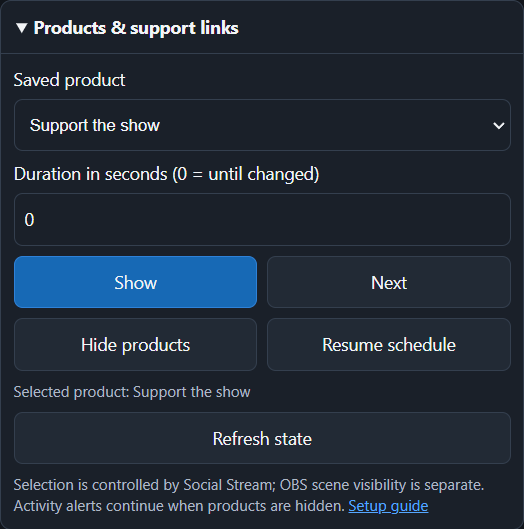

Schnelleinrichtung
- Öffne in Social Stream Ninja Globale Einstellungen und Werkzeuge → Mechanik.
- Aktivieren Fernsteuerung der Erweiterung über API (remote API control of extension). Lass Social Stream Ninja während des Streams aktiv.
- Kopiere die in Social Stream Ninja angezeigte Sitzungs-ID.
- Öffne in OBS Docks → Benutzerdefinierte Browser-Docks.
- Nenne das Dock Social-Stream-Steuerung und verwende diese URL:
https://socialstream.ninja/obs-control-dock.html?session=YOUR_SESSION_ID- Auswählen Übernehmen, schließe das Einstellungsfenster und platziere das neue Dock in OBS an der gewünschten Stelle.
- Prüfe, ob das Dock diesen Status anzeigt: Verbunden. Wenn die URL keine Sitzung enthielt, gib sie im Dock ein und wähle Speichern & verbinden.
Welche Servereinstellungen sind erforderlich?
| Einstellung | Für dieses Steuerungsdock | Zweck |
|---|---|---|
| Fernsteuerung der Erweiterung über API (remote API control of extension) | Erforderlich | Erlaubt dem Steuerungsdock, auf Kanal 1 Befehle an die Social-Stream-App oder -Erweiterung zu senden. |
| Dock-Nutzung und Veröffentlichung über API-Server aktivieren | Nicht erforderlich | Optionaler direkter Servertransport für das Streaming-Chat-Dock. |
| Chatnachrichten an API-Server senden | Nicht erforderlich | Wird verwendet, wenn ein externes Programm erfassten Chat auf Kanal 4 empfangen muss. |
| Dock sendet seine Befehle über den Server an die Erweiterung | Nicht erforderlich | Wird verwendet, wenn das Streaming-Chat-Dock selbst Befehle über den Server zurücksenden muss. |
&server ist in den URLs des Steuerungsdocks oder Abspanns nicht erforderlich. Das Steuerungsdock öffnet bereits seine eigene WebSocket-Steuerungsverbindung. Die WebSocket-Servereinstellungen von OBS sind davon unabhängig und können ausgeschaltet bleiben.Wenn du für dock.html bewusst die direkte API-Übertragung verwendest, nutze nach Aktivierung der Servereinstellung den erzeugten Dock-Link oder füge &server zu dieser Dock-URL hinzu. Dies ist optional und ändert die Funktionsweise der Abspannbefehle nicht.
Mit einem Abspann am Stream-Ende verwenden
- Stelle vor dem Stream in den Abspann-Einstellungen den Auslösemodus auf Erfassung im Hintergrund. So kann die App Chatteilnehmer, Mitglieder und Spender sammeln, während die Abspann-Browserquelle geschlossen ist.
- Füge die erzeugte Abspann-URL mit derselben Sitzungs-ID zur OBS-Abschlussszene hinzu.
- Wechsle am Ende des Streams zuerst zur Abschlussszene, damit die Abspann-Browserquelle geladen und verbunden ist.
- Auswählen Abspann starten im OBS-Steuerungsdock.
Siehe Abspann-Leitfaden für Erfassungsmodi, Filter und Fehlerbehebung bei fehlenden Namen.
Was jede Abspann-Schaltfläche tut
| Schaltfläche | Ergebnis |
|---|---|
| Abspann starten | Spielt die tatsächlich gesammelte Liste ab. |
| Vorschau | Spielt die echte Liste ab, ohne auf der Seite gesammelte Einträge zu verbrauchen. |
| Abspann testen | Zeigt integrierte Beispiele für Teilnehmer, Mitglieder und Spender. Dies belegt nicht, dass echte Namen gesammelt wurden. |
| Gespeicherten Abspann zurücksetzen | Leert die gespeicherte Hintergrundsammlung der aktiven Social-Stream-Sitzung. |
Produkte & Unterstützungslinks
Öffne in Social Stream Monetarisierung, speichere und aktiviere deine Produkte und wähle dann OBS-Steuerungsdock öffnen. Kopiere diese private Steuerungs-URL in OBS unter Benutzerdefinierte Browser-Docks. Für ein reines Produkt-Dock verwende obs-control-dock.html?session=YOUR_SESSION_ID&commerce.
Lass Social Stream eingeschaltet und aktiviere Fernsteuerung der Erweiterung über API (remote API control of extension) wie oben beschrieben. Füge die separate Monetarisierungs-Overlay-URL als OBS-Browserquelle für Zuschauer hinzu. Das Steuerungsdock ist für dich; teile seine Sitzungs-URL niemals mit Zuschauern.


- Anzeigen: ein gespeichertes Produkt auswählen und fest anzeigen. Weiter: vom aktuellen Produkt aus weitergehen.
- Produkte ausblenden: Werbekarten ausblenden; Aktivitätsmeldungen laufen weiter. Zeitplan fortsetzen: zur gespeicherten Einstellung für erstes Produkt oder Rotation zurückkehren.
- Dauer: Anzeigen, Weiter und Ausblenden kehren nach dieser Anzahl Sekunden zum gespeicherten Zeitplan zurück. Verwende 0, um die Überschreibung bis zur nächsten Änderung beizubehalten.
- Zustand: aktualisiert sich alle fünf Sekunden, solange dieser Abschnitt geöffnet ist. Er meldet Social Streams Auswahl, nicht die Sichtbarkeit einer OBS-Szene. Verlorene oder unbestätigte Verbindungen deaktivieren Produktschaltflächen, bis der Zustand wieder verfügbar ist.
Dock, Popup, Stream Deck und Event Flow teilen dieselben Steuerelemente. Bearbeite und speichere den Katalog in Social Stream. Siehe Produktsteuerung für Einrichtung und Automatisierung.
Weitere Steuerelemente und ihre erforderlichen Seiten
- Hervorgehobener Chat: lass das normale Streaming-Chat-Dock und das Featured-Overlay mit derselben Sitzung verbunden.
- Timer: lass die Timer-Seite mit derselben Sitzung verbunden, wenn sie den Timer anzeigen soll.
- Warteliste & Gewinnspiel: richte zuerst die Warteliste in Social Stream ein; Zurücksetzen löscht die aktuellen Einträge.
Das Dock verbindet sich nach einem Abbruch der API-Verbindung automatisch neu. Ein grüner Verbunden Status bestätigt nur die Steuerungsverbindung; die Zielseite muss weiterhin geöffnet sein, wenn ein Befehl etwas anzeigen soll.
Direkte API-Beispiele
Dieselben Schaltflächen lassen sich mit HTTP-GET-Anfragen skripten:
https://io.socialstream.ninja/SESSION_ID/creditsStart
https://io.socialstream.ninja/SESSION_ID/creditsPreview
https://io.socialstream.ninja/SESSION_ID/creditsTest
https://io.socialstream.ninja/SESSION_ID/creditsResetErsetze SESSION_ID durch die aktive Social-Stream-Sitzung. Siehe Befehle und API oder den vollständigen API-Testbereich für weitere Aktionen.
Fehlerbehebung
- Sitzung erforderlich: verwende die genaue Sitzungs-ID aus Social Stream ohne das Wort
session=. - Getrennt: aktiviere die Remote-API-Steuerung, prüfe, ob Social Stream aktiv ist, und öffne das Dock nach einer URL-Änderung erneut.
- Abspann meldet, dass keine Quelle den Befehl angenommen hat: mache die Abschlussszene sichtbar, warte auf das Laden ihrer Browserquelle und versuche es erneut.
- Test funktioniert, aber Start ist leer: Der Test verwendet integrierte Namen. Wähle vor dem Stream die Erfassung im Hintergrund und prüfe, ob normale Chatquellen erfassen.
- Featured-Chat-Schaltfläche hat keine sichtbare Wirkung: prüfe, ob Streaming-Chat-Dock und Featured-Overlay dieselbe Sitzung verwenden und geladen sind.